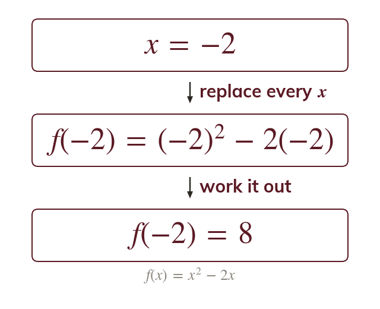
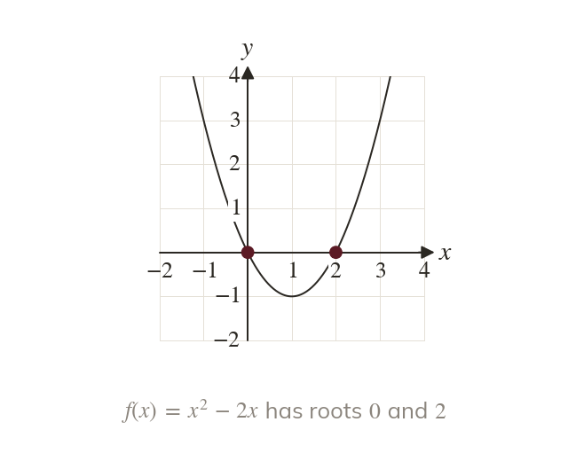
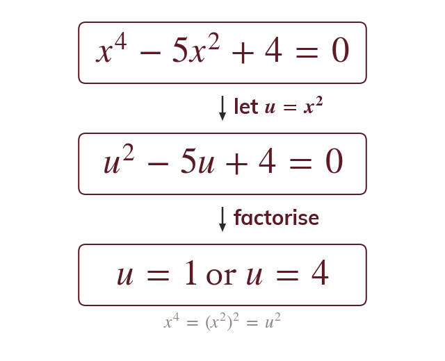
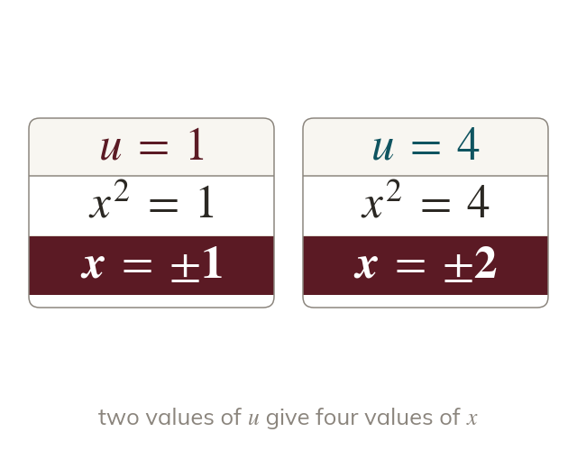
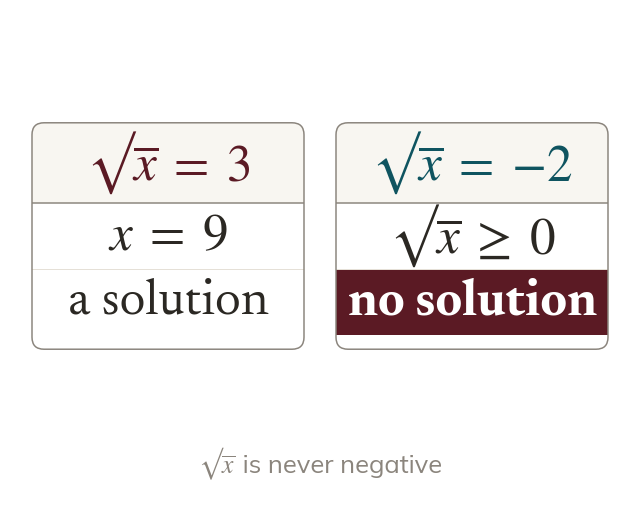

One input, one output
A function takes each input to exactly one output, So means put in place of every
Function notation is the language of the rest of the course, and every curve, derivative and transformation is written with Today it names roots, and it shows that equations in or are quadratics in disguise.
Work down the page at your own pace. Write every answer in your book first, then click to check it.
Read each card, then follow the worked examples one step at a time.

A function takes each input to exactly one output, So means put in place of every

The roots of are the inputs that give an output of zero. On the graph of they are where the curve meets the x-axis.
Pick an answer. If it's wrong, the feedback tells you which mistake it was.
Write the blanks in your book first, then tap each one to check.
Read each card, then follow the worked examples one step at a time.

The equation has where would be and where would be. Writing turns it into a quadratic in

Each value of is an equation in x. Solve each one and keep both square roots.

A square is never negative, and is never negative. A value of that breaks this gives no solution.
Pick an answer. If it's wrong, the feedback tells you which mistake it was.
Write the blanks in your book first, then tap each one to check.
Finished? Next lesson: 2.4 Quadratic Graphs.
For each skill, tap the one that is true for you today. Your Revise pages start with anything you mark Not yet.
Your ratings are saved on this device only.
Log in, then search for a code to practise that skill.